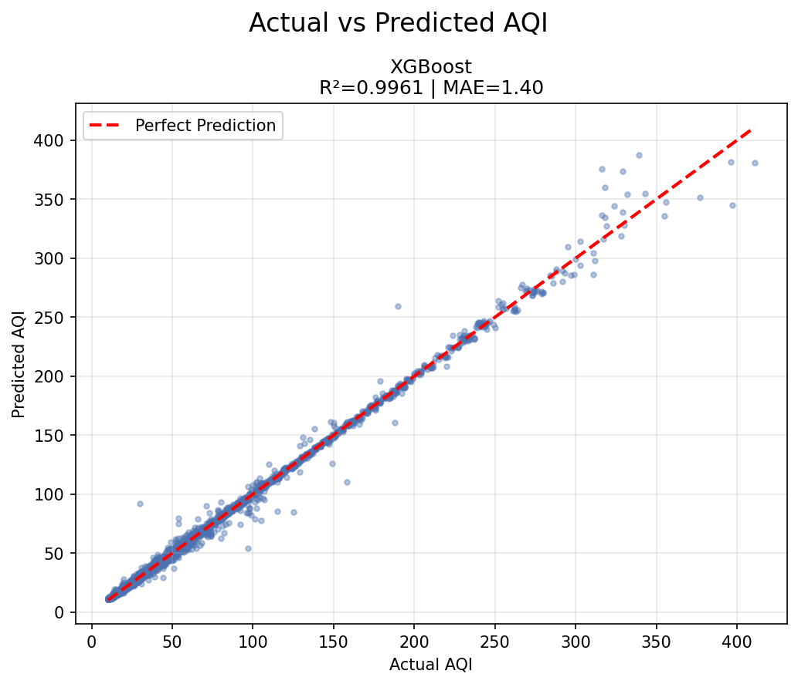
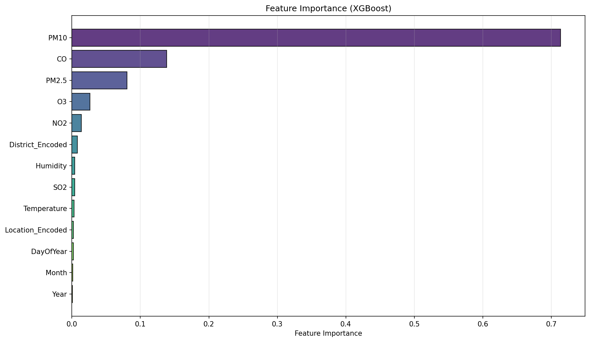
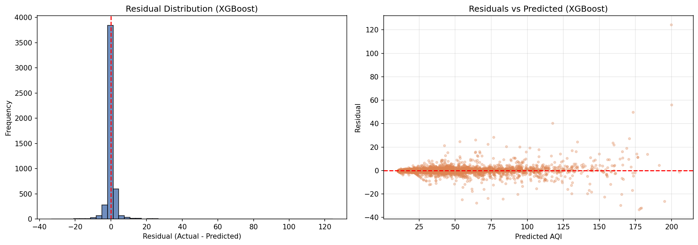
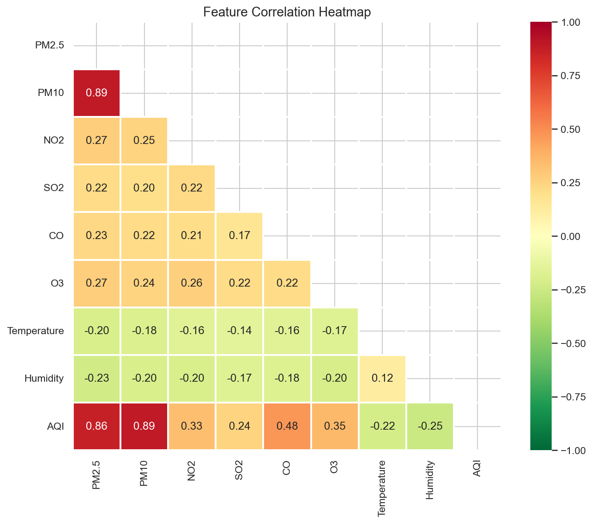
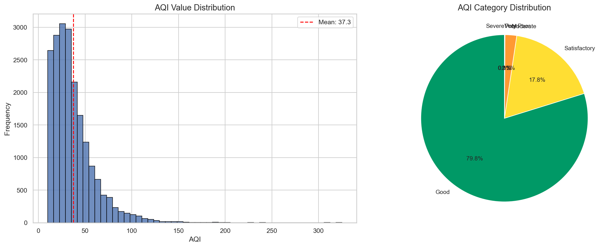
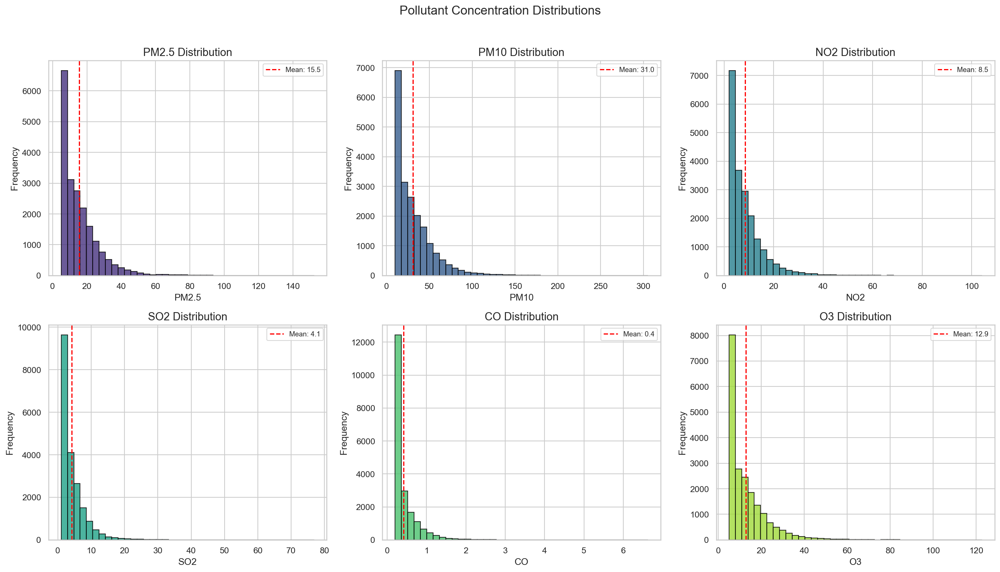
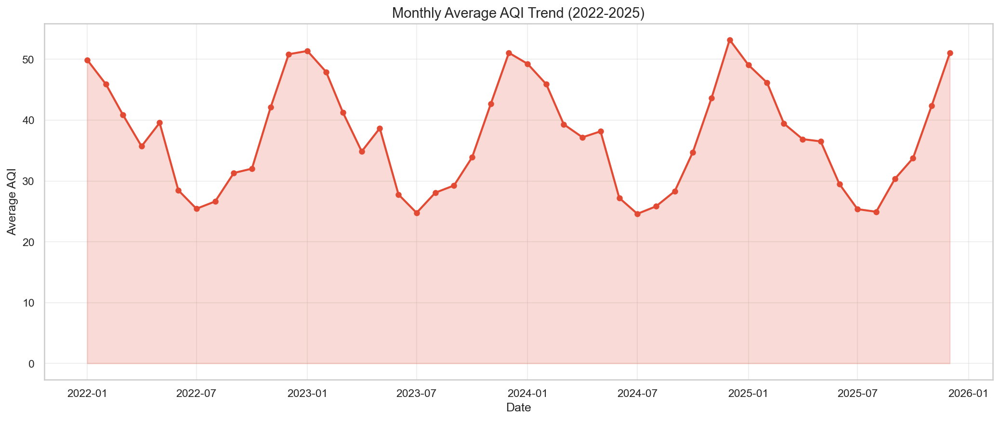
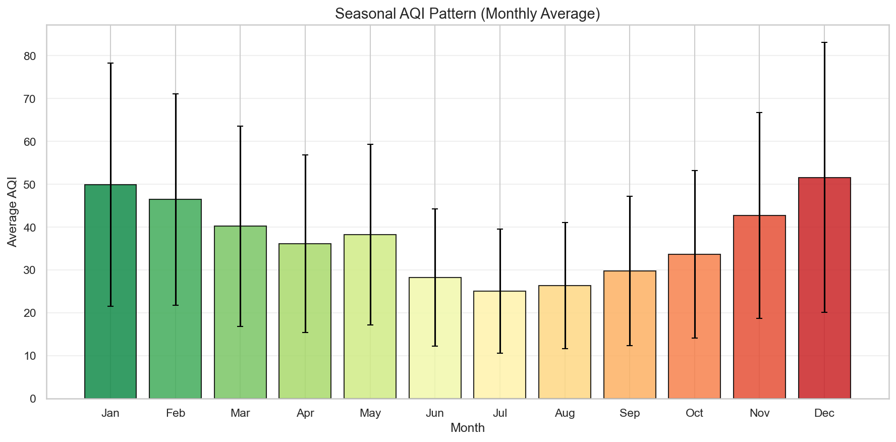
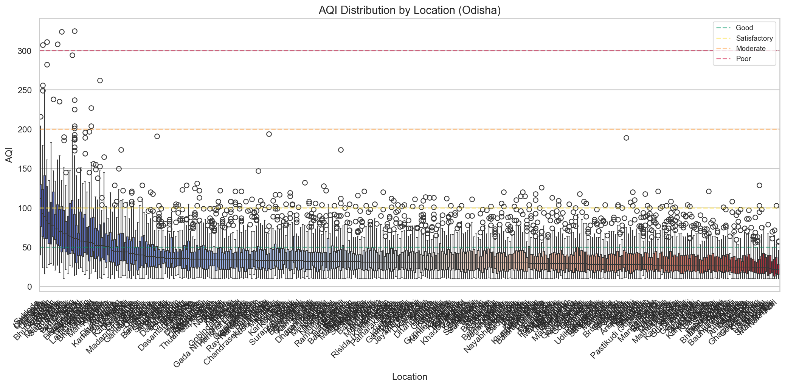

Air Quality Index (AQI) Prediction System
Comprehensive Technical & Visual Report
EnviroPredict is a hyper-local, machine learning-powered Air Quality Index (AQI) prediction system designed specifically for the state of Odisha. Combining real-time environmental data pipelines with an advanced XGBoost ML Engine, the application delivers highly accurate predictions across 9 districts and over 400 locations.
The system categorizes air quality into six distinct levels, following standard environmental guidelines. Each level is associated with a specific color hex code used consistently across the UI for gauge meters, charts, and alerts.
| AQI Range | Category | Color Hex | Visual Indicator |
|---|---|---|---|
| 0 - 50 | Good | #22c55e |
Good |
| 51 - 100 | Satisfactory | #eab308 |
Satisfactory |
| 101 - 200 | Moderate | #f97316 |
Moderate |
| 201 - 300 | Poor | #ef4444 |
Poor |
| 301 - 400 | Very Poor | #a855f7 |
Very Poor |
| 401 - 500 | Severe | #dc2626 |
Severe |
The prediction model evaluates six critical pollutants along with temperature and humidity. The user interface visualizes these pollutants with dedicated thematic colors and dynamic progress bars based on their safe maximum limits.
A highly customized synthetic dataset of 20,000 precise records was procedurally generated to mirror real-world air quality patterns across the state of Odisha, providing a robust foundation for the XGBoost model.
The dataset targets major Odisha districts with a massive focus on hyper-local Gram Panchayats and rural hubs in Kalahandi (100 locations) and Dhenkanal, distinguishing between Urban, Industrial, Rural, Coastal, and Forest terrains.
Data spans exactly 4 years (Jan 2022 - Dec 2025). Strict seasonal multipliers enforce realistic fluctuations, simulating heavy pollution during winter inversions (Dec-Jan) and natural washout effects during monsoons (Jul-Aug).
Complex Gamma and Normal distributions generate base pollutant values (PM2.5, PM10, NO₂, SO₂, CO, O₃) weighted by location type—where Industrial zones (e.g., Rourkela, Barbil) receive factor multipliers up to 1.55x.
The final composite AQI is calculated using the official Central Pollution Control Board (CPCB) of India standard, ensuring the mathematical formulas for sub-indices map exactly to local regulatory guidelines.
The system's performance is comprehensively evaluated using both regression and classification metrics to ensure utmost reliability of the AQI predictions.
CV R² Scores: [0.9754, 0.9833, 0.9917, 0.9891, 0.9360]
Mean CV R²: 0.9751 ± 0.0203
A comprehensive set of plots generated during Exploratory Data Analysis (EDA) and Model Training phases.









The EnviroPredict dashboard features a hyper-responsive, cinematic design aimed at delivering complex environmental data through a highly accessible and visually striking interface.
A modern, compartmentalized 3-column dashboard layout that elegantly organizes scan controls, dynamic pollutant breakdowns, and the main ML predicted gauge meter into distinct semantic blocks.
Built with a mobile-first approach using custom media queries, the application flawlessly adapts across all devices, scaling from sweeping desktop vistas to perfectly stacked mobile column layouts.
Users can seamlessly toggle between Light and Dark modes. The application intelligently adjusts all background cards, text contrast, glow effects, and interactive elements to minimize eye strain.
Premium hover lift effects, staggering element fade-ups, and native CSS transitions make the data exploration process feel alive, premium, and highly engaging.